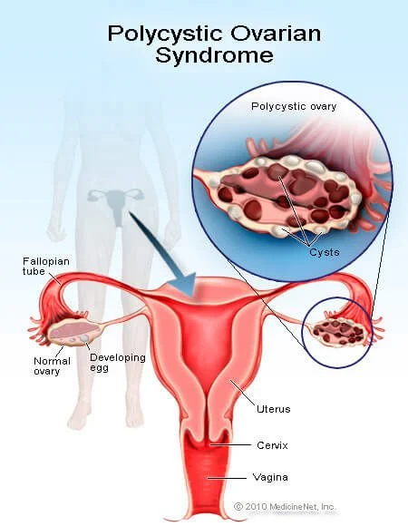

Polycystic ovary syndrome

SYMPTOMS:
- Irregular periods. A lack of ovulation prevents the uterine lining from shedding every month. Some women with PCOS get fewer than eight periods a year or none at all (10Trusted Source).
-
Heavy bleeding. The uterine lining builds up for a longer period of time, so the periods you do get can be heavier than normal.
-
Hair growth. More than 70 percent of women with this condition grow hair on their face and body — including on their back, belly, and chest (11). Excess hair growth is called hirsutism.
-
Acne. Male hormones can make the skin oilier than usual and cause breakouts on areas like the face, chest, and upper back.
-
Weight gain. Up to 80 percent of women with PCOS are overweight or have obesity (11).
-
Male pattern baldness. Hair on the scalp gets thinner and may fall out.
-
Darkening of the skin. Dark patches of skin can form in body creases like those on the neck, in the groin, and under the breasts.
Headaches. Hormone changes can trigger headaches in some women.
CAUSES
- Doctors don’t know exactly what causes PCOS. They believe that high levels of male hormones prevent the ovaries from producing hormones and making eggs normally.
-
Genes, insulin resistance, and inflammation have all been linked to excess androgen production./li>
DIAGNOSIS
Doctors typically diagnose PCOS in women who have at least two of these three symptoms:
-
high androgen levels
-
irregular menstrual cycles
-
cysts in the ovaries
Your doctor should also ask whether you’ve had symptoms like acne, face and body hair growth, and weight gain.
A pelvic exam can look for any problems with your ovaries or other parts of your reproductive tract. During this test, your doctor inserts gloved fingers into your vagina and checks for any growths in your ovaries or uterus.
Blood tests check for higher-than-normal levels of male hormones.
You might also have blood tests to check your cholesterol, insulin, and triglyceride levels to evaluate your risk for related conditions like heart disease and diabetes.
An ultrasound uses sound waves to look for abnormal follicles and other problems with your ovaries and uterus.
TREATMENT
-
restore a normal hormone balance
-
regulate ovulation
-
relieve symptoms like excess hair growth
-
protect against endometrial cancer